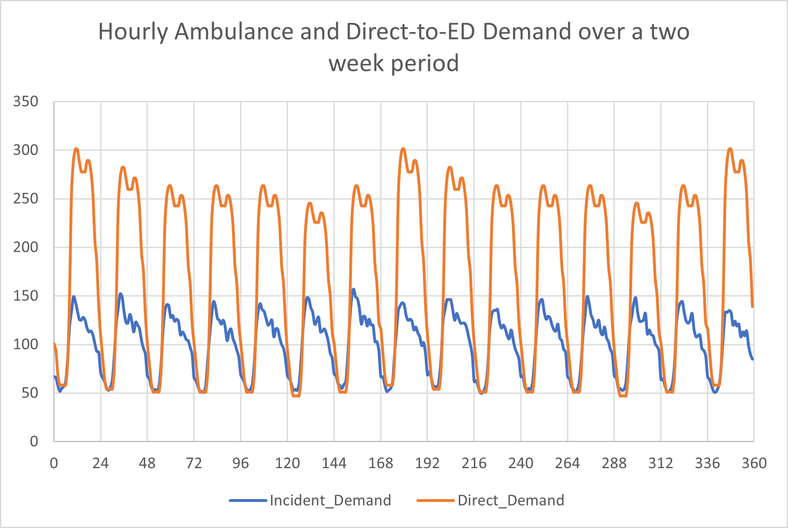

Inputs
Overview
The core model inputs can be mainly grouped into the following:
- Demand and flow
- Ambulance demand (t)
- volume (t)
- by category (t)
- by care model
- by conveyance destination
- Direct demand (t)
- Ambulance demand (t)
- Supply (t)
- Ambulance supply (t)
- ED supply (t)
- Job Cycle Time components
- Time to scene
- Time at scene
- Time to site
- Unavoidable pre-handover
- Time to clear
- (nb: Time to Allocate and Time to Pre-handover (Avoidable) are not user inputs, they are emerging outputs from the model given demand and supply)
- ED Management
- ED acuity for Direct ; ambulance category
- ED time in department
The (t) indicates which ones can be given by the user in a time-resolved (hour-by-hour) way.
Configuration of inputs in the code
While inputs.R is the main script for loading in Input parameter files for model run purposes, this file would typically not be updated by an end-user, with all user updates being done in the Input parameter files themselves (within ./parameter/__/) and config.R.
Overview by type
The resulting Inputs for demand, supply, and timings were taken from the identified data sources. Below some examples are given (though other options are possible).
For a more detailed walk-through on the use of Parameter Input Files, see User guide - Parameter input files.
For a more detailed walk-through of config.R, see User Settings (Config).
Demand - Hourly Schedule
The demand schedule is made up of a dataframe which covers hourly arrivals for:
- Number of ambulance incidents (calculated from hourly and weekday proportions of actual number of incidents from selected geography in selected time period)
- Number of direct ED walk-in demand (calculated from hourly and weekday proportions of uplifted number of incidents by a factor of 1.736)

Note: other options available, see User guide - Parameter input files.
Demand and Flow - Category
When patients are generated as demand in the model, they are assigned a category. This can be set as either time-variant or time-invariant.
Time-variant:
- Proportion of Category1 ambulances (calculated from actual numbers of cat 1 ambulance calls multiplied by hourly profiles)
- Proportion of Category2 ambulances (calculated from actual numbers of cat 2-4 ambulance calls multiplied by hourly profiles and category proportion)
- Proportion of Category3 ambulances (calculated from actual numbers of cat 2-4 ambulance calls multiplied by hourly profiles and category proportion)
- Proportion of Category4 ambulances (calculated from actual numbers of cat 2-4 ambulance calls multiplied by hourly profiles and category proportion)
Time-invariant:

Demand and Flow - Model of Care
Patients are assigned a care model depending on their category.

Demand and Flow - Category
Patients needing conveyance are assigned a conveyance destination (ED or non-ED).

Demand and Flow - ED Acuity
Patients are allocated an acuity based on their route to ED and category

Job Cycle Time
The inputs for the Job Cycle Time Components can be chosen as either Quantile-based or Stylistic parametrisation-based.
The relevant components are:
- Travel to scene
- Time at scene
- Travel to site
- Unavoidable pre-handover
- Time to clear
- (pre-handover and time to allocate are emerging queuing model characteristics, not inputs)
 Fig. Example input "Time at Scene" JCT component (Quantile-based). For ‘See and Treat’ incidents, divided by categories.
Fig. Example input "Time at Scene" JCT component (Quantile-based). For ‘See and Treat’ incidents, divided by categories.
 Fig. Example input "Time at Scene" JCT component (Stylistic-based). For ‘See and Convey’ incidents, divided by categories.
Fig. Example input "Time at Scene" JCT component (Stylistic-based). For ‘See and Convey’ incidents, divided by categories.
Supply- Hourly Schedule
The supply schedule is made up of a dataframe which covers hourly resources available for:
- Number of double staffed vehicles (DSV/DSA) (calculated from hourly and weekday proportions of actual number of ambulances available from selected geography in selected time period)
- Relative hourly ED supply (calculated from hourly, weekday and week-on-week relative proportions)
Note: other options available, see User guide - Parameter input files.